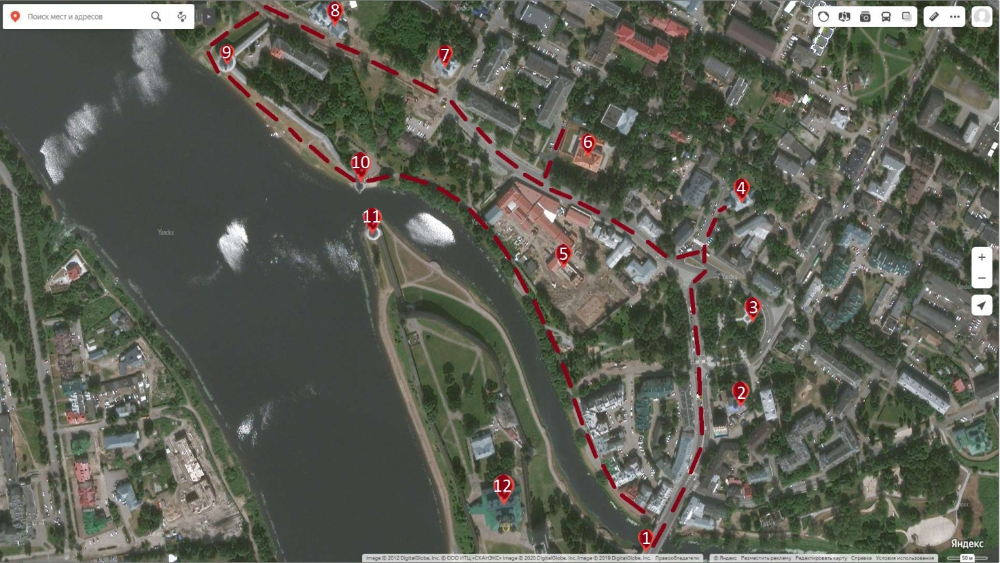

Путеводитель по маршруту
"Псков православный"
Данный маршрут включает в себя 12 замечательных мест в нашем городе, поход по которым поможет ознакомиться историей города и его великолепными видами, а для лучшего ознакомления предлагается дополнительная информация по каждой из точек интереса. 
1.Троицкий собор
2.Церковь Козьмы и Дамиана с Примостья
3.Сквер Народовластия
4.Церковь Ильи Пророка Мокрого с Луга
5.Канатная фабрика Мейера
6.Палаты Постникова
7.Церковь вознесения Христова со Стадища
8.Церковь Варлаама Хутынского
9.Варлаамовская башня
10.Высокая башня
11.Плоская башня
12.Троицкий мост